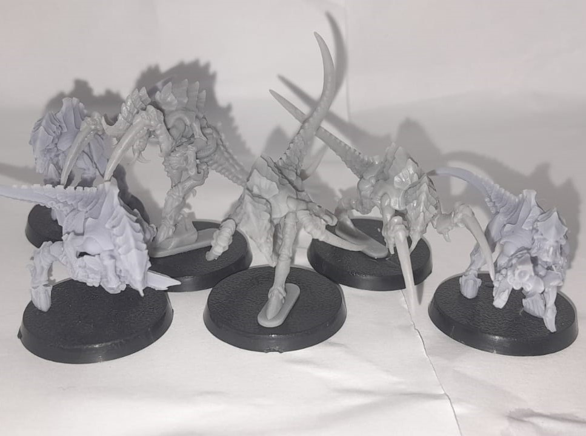
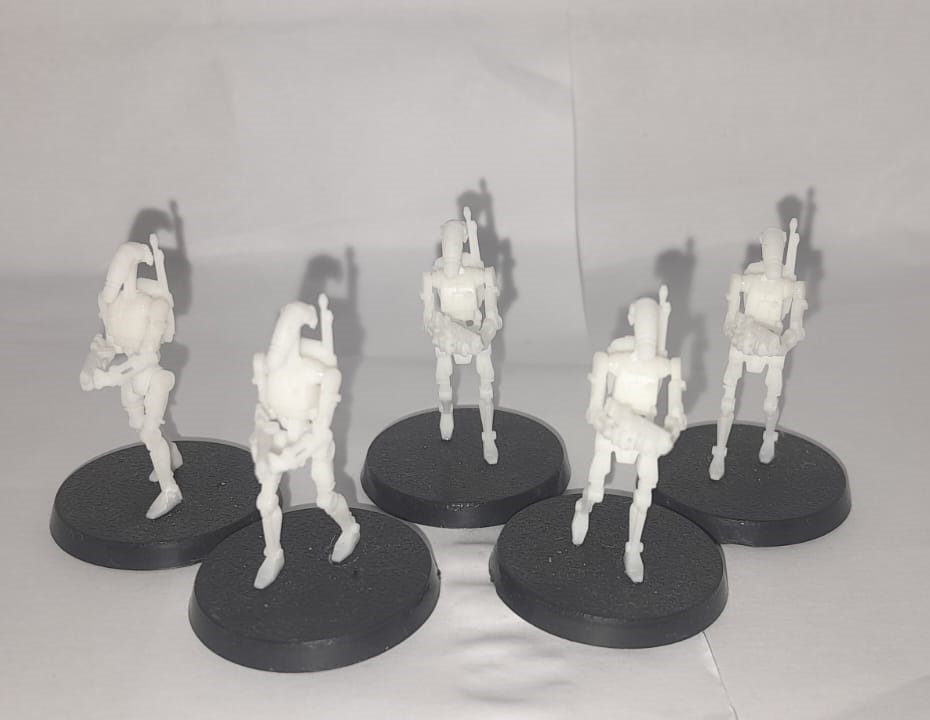
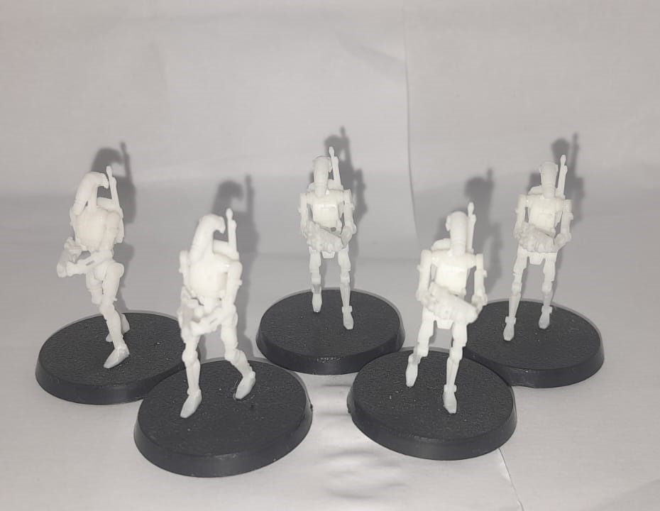
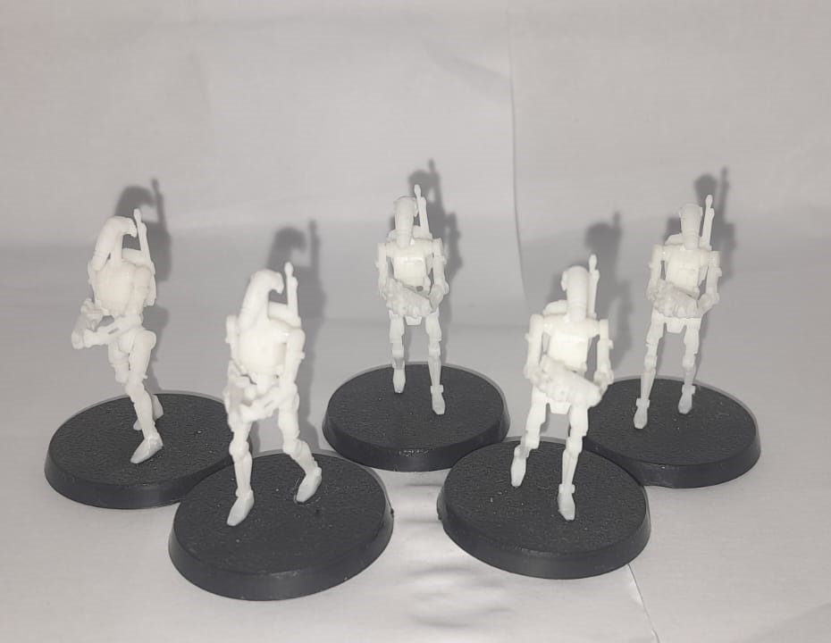
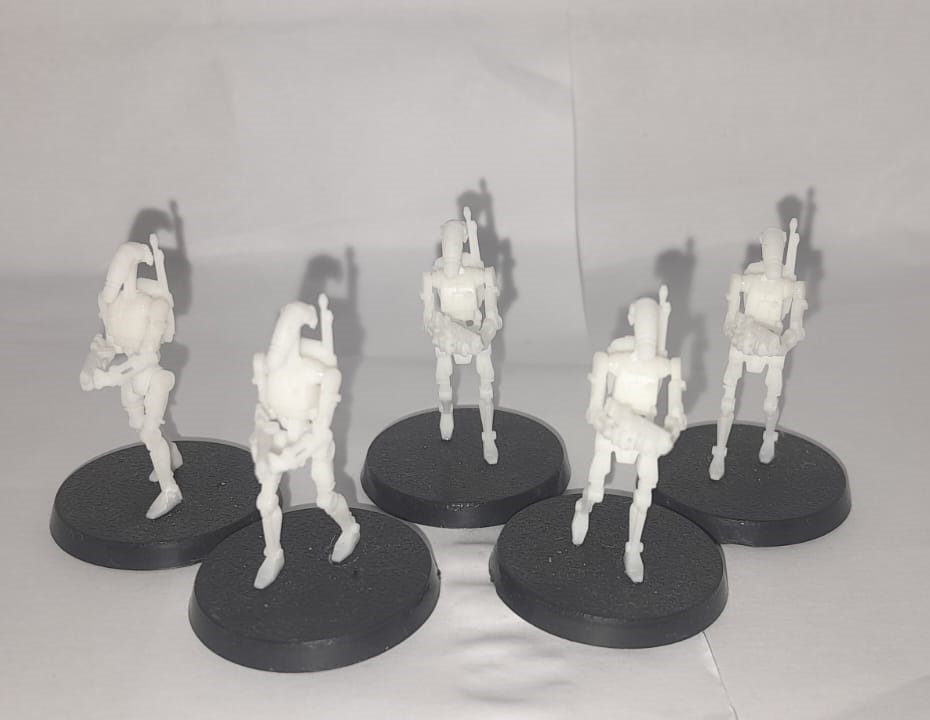

 




A Pedro's 3D Workshop é a sua loja especializada em bonecos 3D personalizados, feitos com a mais alta tecnologia de impressão 3D. Oferecemos uma ampla gama de modelos, desde figuras colecionáveis de personagens de filmes, séries e jogos até opções personalizadas. Nossos produtos são criados com materiais de qualidade e acabamentos detalhados para garantir durabilidade e um design impressionante.

A Impressora 3D Saturn da Elegoo é uma impressora de resina de alta qualidade, projetada para oferecer uma excelente precisão em impressões 3D. Com uma área de impressão generosa de 218 x 123 x 235 mm, a Saturn se destaca pela sua capacidade de produzir detalhes incríveis e superfícies suaves.
Pequena exposição Sobre os processos
A manutenção da impressora é importantíssimo para o a longevidade da maquina, requerendo que constantemente o propietário averigue a integridade do EPF O EPF(etileno propileno fluorado) é um "plastico" isolante que apresenta exelentes propiedades térmicas, mecânicas e químicas, que é utilizado como fundo da "bacia" de resina da impressora, onde este está em contato direto com a tela de LCD A tela de LCD é o componente mais sensível da impressora, onde caso haja um derramamento de resina sobre ela, deve-se limpar-lá imediatemente para que a resina não cure sobre a tela e a danifice, também arranhões ou pancadas podem diretamente danificar a qualidade física das impressões
Para imprimir nestas máquinas são necessários programas específicos, como por exemplo o Chitubox e o LycheeSlicer, que possuem versões gratuitas que os usuarios podem utilizar sem dor de cabeça. >Nós utilizamos o slicer Chitubox, pois a marca da Elegoo envia junto das suas impressoras um pendrive com o instalador do programa, para que o consumidor tenha tudo necessário para imprimir ao montar sua impressora.
As impressoras de resina funcionam com uma tela que projeta luz UV para curar a resina nos locais programados, estas, podem imprimir toda a área da mesa de impressão sem acressimo de tempo
O tempo total para se imprimir depende do modelo, como no nosso caso dividimos as peças a media de tempo que cada boneco fica pronto é de no mínimo 6 horas.